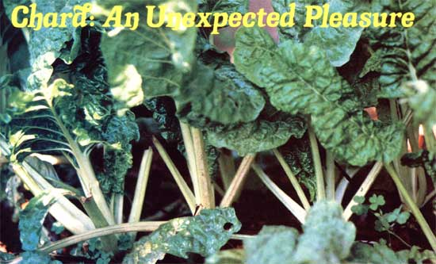
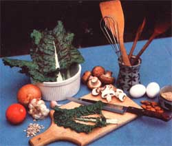

I can't help it. I've been growing Swiss chard (Beta vulgaris cicla) for three years ... and I've become so hooked on this wonderful plant that I just can't help raving about it. Wouldn't you talk up a food crop that's [11 easy to grow, [2] colorful enough to serve as an ornamental, [3] mild-tasting, [41 loaded with nutrients, and [5] exceedingly resistant to pests?
Chard's beauty sets it apart from most garden greens. Its tall, curlyedged, dark-green leaves-with their slender, ivory-white centers-make the plant truly an "edible decoration". (For that reason, Beta vulgaris cicla is just as eye-pleasing when grown in a pot as it is sown along the borders of a path or in traditional rows.) And with no more care than the regular waterings and feedings that you extend to the other inhabitants of your garden, chard quickly grows lush and strong ... and stays that way. Fact is, if you're careful to harvest only the leaves, the plant's rootstocks will continue to flourish and send up plume-like foliage year after year . . . in which case you'll never have to buy seed again.
Chard isn't just "another pretty face in the pea patch", however ... it's also good for you. Only 100 grams (about 3-1/2 ounces) of B. vulgaris cicla-briefly steamed or cooked in a little water till limp-contain 1.8 grams of protein, 1.8 milligrams of iron, and 5,400 International Units (more than the minimum adult daily requirement) of vitamin A. And if you eat the greens raw, the figures are even more impressive: The same 100 grams of uncooked chard contain 2.4 grams of protein, 3.2 milligrams of iron, 6,500 I.U. of vitamin A, and 32 milligrams of vitamin C to boot.
But alas, the flavor of chard is not what you'd call "exciting". Chardin fact-is rather bland and lacks the zip of, say, spinach or mustard greens. Perhaps this is just as well. Many people prefer delicately flavored vegetables ... and (as luck would have it) a large number of garden pests don't. (Snails and slugs, for instance, have been known to turn down chard in favor of nearby plantings of spinach or romaine.) Those of us who wish to enhance chard's rather benign taste, however, can do so easily by preparing the greens with such flavory companions as garlic, onions, and/or cheese. (Suggestions follow.)
By now, you have-I trust-had your "chard consciousness" raised, your sense of frugality stimulated, and (I hope) your curiosity aroused. If so, do go out and invest 39c in a packet of Swiss chard seed (a packet that-once planted-may well keep you supplied with the food forever). You have nothing to lose ... and a whole new dimension of aesthetic and gustatory delight to savor.
With this dish, the most critical element is timing. The various ingredients require very little cooking time, and once cooked-should not be allowed to sit while you set the table. If you want everything to taste fresh and crisp, prepare your table and pour the drinks first ... then start cooking.
1 pound of fresh chard
1/4 cup of margarine or butter
2 cloves of garlic, minced
1 medium onion, chopped
1/2 cup of shelled sunflower seeds
1 pound of fresh mushrooms, washed and sliced salt and pepper to taste
1-1/2 cups of grated cheese (cheddar, Jack, Swiss, Parmesan, or any combination thereof)
Wash the chard and cut the green parts of the leaves from the central white shafts, then pack the greens into a steamer or a good-sized pan that contains a little water. Chop the white part of the chard.
Next, melt the margarine or butter in a frying pan and saute the garlic, onion, seeds, and white parts of the chard for about 10 minutes (that is, until the vegetables are limp and the seeds crisp). Add the mushrooms to the frying pan and turn the heat on under the pan of chard. Bring the chard to a boil, then reduce the heat to the lowest setting and allow the greens to simmer. At the same time, cook and stir the mushroom-garlic-onion-seed mixture until the mushrooms have released most of their liquid ... about 10 minutes. Salt and pepper to taste. By this time, the chard in the pan should be just limp.
Now remove the chard from the pan with tongs (or with a large slotted spoon) and distribute the greens evenly among four plates. Top with grated cheese, spoon the hot mushroom mixture over all, and serve immediately. (Hint: A wedge of lemon is a nice go-with, as are slices of tomato and/or other fruit.)
(Makes 8 side-dish servings or 4 main-dish servings)
1 pound of fresh chard water
3 cups of cooked (approx. I cup raw) brown rice
1/2 cup of chopped or slivered almonds
2 eggs, well beaten
1 cup of milk
2 teaspoons of Worcestershire sauce
1-1/4 teaspoons of salt
1/2 cup of chopped onion
1/4 cup of butter or margarine
1/2 cup of grated sharp cheese
Wash the chard and cut the green parts away from the white stalks. (You may dispose of the white part at this point, or chop the stalks up, saute them briefly, and add them to the casserole mixture below.) Steam or cook the greens in a small amount of water ... then-in a large strainer-drain the leaves and press as much water from them as you can with your hands or the back of a spoon. Chop the greens into very small pieces.
Now-using a fork-toss the almonds and the cooked brown rice and chard together in a large bowl. Add the eggs, milk, Worcestershire sauce, salt, and onion. Toss everything gently, being careful not to mash the grains of rice.
Finally, pour the mixture into a greased two-quart casserole dish, dot the contents with butter or margarine, and sprinkle grated cheese over the top. Bake at 350'F for 30 to 40 minutes.
3 tablespoons of butter or margarine
3 tablespoons of whole wheat flour
1 cup of scalded milk
1/2 cup of grated sharp cheese
2 tablespoons of finely chopped onion
1/2 cup of cooked, drained, and finely chopped chard
1 teaspoon of salt
4 egg yolks, beaten
4 egg whites
Melt the butter or margarine in a saucepan and blend in the flour, stirring constantly over a medium flame. Gradually stir in the milk and blend until smooth. Then lower the heat and add the cheese, onion, chard, and salt, and continue to stir until the cheese has melted. Remove the mixture from the heat and pour it over the beaten egg yolks in a bowl. Blend well and allow the mixture to stand.
In another bowl, beat the egg whites until they're stiff but not dry. Gently fold the egg whites into the cheese-chard-onion mixture, then pour the combination into a greased souffle dish or a straight-sided casserole. Bake- uncovered- in a 375' oven until the souffle has puffed up and browned (about 35 minutes). Serve at once (before it falls).
1 medium onion, chopped
1 clove of garlic, minced
2 tablespoons of olive or salad oil
1 pound of hamburger
1/2 pound of fresh mushrooms, sliced
1 can (8 ounces) of tomato sauce
1 can (6 ounces) of tomato paste
2 teaspoons of salt
1 teaspoon of oregano
3/4 cup of water or dry red wine
1 cup of cooked, drained, and finely chopped chard (about 1 pound raw)
I1 cup of cottage cheese
1/3 cup of grated Parmesan cheese
2 eggs
1 package (12 ounces) of lasagna noodles, cooked according to package directions
1/2 pound of Monterey Jack cheese, grated
Brown the onion and garlic lightly in one tablespoon of the oil in a large frying pan. Add the hamburger and cook until the meat is no longer red. Throw in the sliced mushrooms and cook until they've lost most of their liquid . . . then stir in the tomato sauce, tomato paste, one teaspoon of salt, the oregano, and the water or wine. Simmer 15 minutes.
In a clean bowl, combine the chard with the cottage cheese, the Parmesan cheese, one of the eggs, and the remaining teaspoon of salt and tablespoon of oil. In another bowl, beat the second egg slightly and toss with the cooked and drained lasagna noodles.
Now pour half the meat sauce into the bottom of a long (about 9" X 13") baking dish and cover with half of the noodles. Spread all of the cheese/chard mixture over this and top with [1] the remaining lasagna noodles, followed by [21 the remaining meat sauce. Next, cover the baking dish with foil and pop it into a 350' oven. About 45 minutes later, remove the foil and sprinkle grated Jack cheese over the hot lasagna . . . then return the dish to the oven (uncovered) and bake 15 to 20 minutes longer. Allow the lasagna to cool five to 10 minutes before dishing it up.
Add a green salad, bread, and wine to this extraordinary main dish, and you've got a thoroughly delightful meal for up to eight persons. And if this doesn't make you a chard fanatic ... I don't know what will!
|
 Chard?the ancestor of the modern-day beet?has been around longer than most folks realize (it was a favorite of the Greeks and Romans)...is easier to grow than most people think ( wherever lettuce can be cultivated, chard will thrive)...and tastes a whole lot better than most non-chard-eaters suspect! |
 |
|